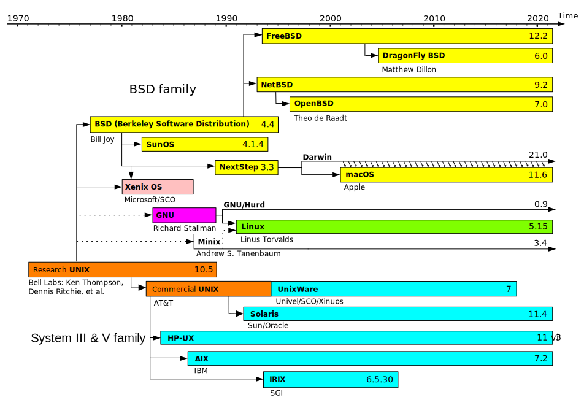

Cette œuvre est mise à disposition selon les termes de la Licence Creative Commons Attribution - Pas d’Utilisation Commerciale - Partage dans les Mêmes Conditions 4.0 International.
Les systèmes *NIX, ou dit de type UNIX, est une famille de systèmes d’exploitation (OS). Le premier OS de cette famille est UNIX développé par Bell Labs. Cette famille se divise en 3 sous-familles:
Les systèmes d’exploitation de type UNIX génétique contiennent soit le code source d’UNIX, ou sont basés dessus. On y retrouve les UNIX dits commerciaux comme Solaris de Sun Microsystems ou AIX d’IBM, mais aussi les systèmes d’exploitation développés par les universités comme BSD de l’Université de Californie et tous ses dérivés.
Les systèmes d’exploitation de type UNIX commercial sont des systèmes d’exploitation qui sont certifiés par l’Open Group. On y retrouve par exemple MacOS (anciennement OS X) qui est lui basé sur FreeBSD et NeXTStep.
Les systèmes d’exploitation de type UNIX fonctionnel sont ceux qui ne respectent pas proprement les spécifications UNIX, mais dont le fonctionnement est extrêmement proche. On y retrouve notamment Linux et Minix (OS qui a servi d’inspiration à Linus Torvalds pour Linux).
De nos jours, les systèmes de type UNIX sont très populaires dans les serveurs, mainframes et super-ordinateurs, avec notamment Linux et FreeBSD pour les serveurs et super-ordinateurs, et AIX et z/OS pour les mainframes. Mais ces derniers sont aussi populaires chez les développeurs avec MacOS et Linux. Ainsi, Apple est le plus important fabricant de stations de travail UNIX.
Il est à noter qu'Android (l’OS le plus répandu dans le marché des smartphones) est basé sur une version modifiée de Linux, mais n’est pas considéré comme étant de type UNIX, car l’espace utilisateur s’éloigne trop des spécifications.

Dans les années 90 avec Windows NT 4, Microsoft rend Windows compatible POSIX (norme inspirée d’UNIX). À partir de 2016, Windows intègre WSL (Windows Subsystem for Linux), un sous-système Linux qui permet d’exécuter des programmes conçus pour Linux. Red Hat et Cygnus, créent en 1995 Cygwin, un programme permettant d’avoir accès à un environnement UNIX dans Windows.
Wikipedia : lien